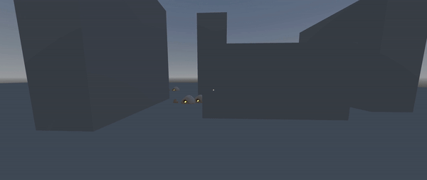
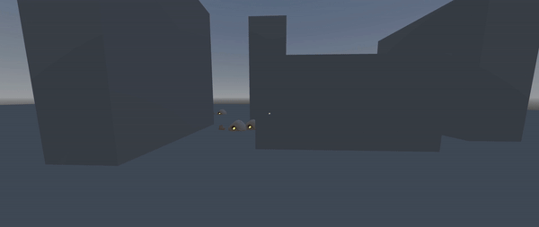

← oscar saul / devlogs
Kaykit Adventurers
Kaykit Dungeon Remastered
Kaykit Skeletons



Devlog #1 - The Making of an Epic Dungeon Crawler
March 19. 2024 - Published by Oscar SaulThis devlog is the first entry of many for this ARPG dungeon crawler being developed with Godot4. In this post, I would like to share the various features and mechanics I have planned for the development of this game.
The asset used in this project are from kaylousberg
Player Classes
The player can choose their class from options, such as fighter, barbarian, druid, ranger, and wizard. Each class affects weapon interactions and play-styles to give a unique and refreshing experience on every run.
Key System
I have implemented a key system that can unlock doors and chests by referencing the data containers from resources. This will be especially helpful in the future when creating rooms with procedural generation.
Enemy Spawning and Pathfinding

Using Godot's nav agents, I create a pathfinder script to target the player's position and move towards them, avoiding collision shapes.
That is it for the first entry of the devlog. In the future, I plan on fully implementing the class features and weapon interactions.